|
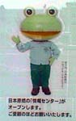 原燃キャラにツカエル作業員！【青森発ケロリカ同志同志記者】さて、青森からの“かえる様新春第一報”は、六ヶ所原燃マスコットキャラクター・ツカエルくんのポスターをお送り致します。
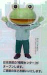 青森県六ヶ所村は、日本原燃の本拠地であり、現在、使用済み核燃料のリサイクルを目的とした再処理工場を建設中なのは周知のとおり。それにまつわる黒い噂、反対運動等々、常にマイナスイメージのつきまとう日本原燃ではありますが、唯一世の中のためになる部分があるのでございます。
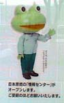 それは、ＰＲにツカエルくんを起用したということ。カエルくんは、青森の街角、雑誌、新聞、ＴＶ等で日々「ツカッテモ、ツカエル」「ツカエルくん、将来を考える」と、ウラン燃料リサイクルを訴えているのです。世論の逆風に立ち向かうツカエルくん。なんという信念。なんという勤勉。 そんなツカエルくんの姿をご高覧戴きたく、ご報告申し上げます。 【全国かえる奉賛会】あううううう。原発は、恐い。大王は、原発恐がりなのだが。。発電する効率よりも、再処理とか原発解体などの経費を相殺したら、石炭とか石油燃やしたほうがコスト安いぜええええ。 水力発電ダムも、別の意味で恐いけど（あのそそりたつコンクリート堰堤みただけで握力がうせる）。原子力発電の燃料再利用について、それを広報するキャラにカエルを起用するとは、すごいぜええええ。
カエルのいるところ、いかなる差別もできないから、メットと作業着姿のツカエル君の健闘をみんなもたたえようではないかああああああ。命を捧げてまでツカエナクていいからね！でも、きみは可愛いよ。すきなキャラだね。
東京みやげはカエルなカード！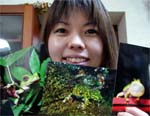 【江戸発うなぎ様】江戸を旅したときに、かえるグッズがたくさんある店に遭遇。カエルのポスカを買って来ました。あまがえるがのどをふくらませて泣く姿とかあって、かわいいいいい。さっそく、会社のカエル好きな先輩にプレゼントしましたああああ。
【全国かえる奉賛会】身体の割にでっかく鳴く生物って、鳴いているときって、とっても気持ちいいんだろうなあああって思います。全身に自分の声が響くってきっと、考えられない程しあわせなのかも。いいなー。
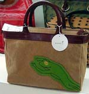 デパートにカエルバッグ、お風呂にカエル様発見！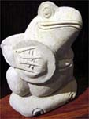 【江戸発スミ同志記者】福岡の大丸のバック売場にいたカエルくんです。このカエルバックは、売り切れてしまったかもしれませんが、同じメーカーから、春カエルくんが発売されていました。春になったら、いいですよね。彼氏とかにプレゼントされたら、うれしいいいいいい。
同じく、福岡にオープンした『しろやま乃湯』のマッサージ屋にいたカエルです。バリ式のマッサージ屋だったので彼はバリ出身だと思います。

カエル様作者と連絡取れました！【福岡発げこげこ大王七世直筆】先週号で『カエルさま』を制作した新里さんとの連絡を新聞で訴えていたところ、彼の知人を通じて本人と連絡が取れました。みなさんの御協力に感謝します。『カエルさま』は下のファイルから、『みんなの広場』をクリックしたら、『カエル様』を拝むことができます。 福岡かえる展５！長野県かえる展との連係決まる！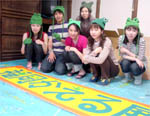 【福岡かえる展５実行委員会】６月６日カエルの日を祝福するイベント『福岡かえる展』は、今年も５年連続で挑戦することになったのだが、今年は、長野県のかえる展がほとんど同時期に開催することが決定。東西でいっしょに協力して、今年のイベントを行うことにりました。 みんなもカエル展情報に注意して、参加しましょおお。とくにイラストレーターの人は、いろいろと募集ものもあるので、注意しといてくれえええええ。
ソニプラにカエルデジタル時計！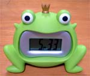 【熊本発のんたん同志記者】ソニプラを覗いたら、このデジタル時計を発見しました。まるで顎が外れたようなフロッグプリンス☆数字も大きくかなり見やすいです。アラーム音は残念ながらピーピーピー♪と普通。ゲコゲコ♪っていうアラーム音だったら良かったのに・・・
【全国かえる奉賛会】すげー！のんたん！日本最大のカエルな時計保持者ではないでしょうかああああ。アラーム音の工夫は平成13年3月26日で紹介した韓国製に学んでほしいよねええ。せめてカエルの声を選べる設定にして、ウシガエルの声とかでさわやかに目覚めたいぜ。というか、ねつきが悪い時に、カジカかえるの声とかで眠りに入りたいよね。そうすれば、目覚まし機能だけでなく、寝付き時計としても使えるぞおおお。
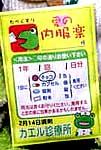 今年もかえるチョコ！【日本発カエルのガーデナー同志記者】バレンタインが近づくと毎年あるネタだとおもいますが、とりあえずかえるチョコを見つけたので報告します。中身のチョコは蛙のかたちではなく、薬のような小さなツブツブでした。袋には、「たべぐすり」とありました。
【全国かえる奉賛会】うれしいい。病院からもらう薬袋も、これにしてほしいぞお。ケロっと治るよねえええ。
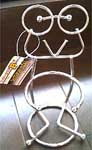 カエルのコップ立て！【福岡発ひさよ同志記者】五月出産予定ですが、なんとか今年もかえる展をみにいきたいものだと願っております。(かえるの子はかえるでございましょう・・・)わがやにいるカエルのコップ立てです。
【全国かえる奉賛会】いいなーカエル道具に囲まれていると幸せだよねえ。このコップたて、素朴なデザインですごいなあ。デザインした人の
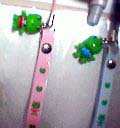 コルゲンコーワのカエル携帯ストラップ！【日本発ようくん同志記者】コルゲンコーワを買うとストラップが一個ついてきます。二つともゲットしました。母にいい薬だからと勧めて．．ピンクは娘の、青は主人の携帯に（娘のはおもちゃです。）つけてます。我が家のかえる化計画は着々と進行中です。
【全国かえる奉賛会】いいなあああ。やっぱカエラーの風邪薬はコルゲンコーワだよねえ。
探してます、カエル椅子！【かえる掲示板発かっぱのカーたん 同志記者】昔なつかしい、カエル椅子を現在も販売しているお店をご存知ないでしょうか？子ども用の椅子で背もたれがカエルの顔、おしりをおろすと「きゅ〜」と鳴く椅子です。子どもの離乳食がはじまったので椅子が欲しいのですが、主人がどうしてもカエル椅子じゃなきゃイヤ！と言うのです。カエルの達人のみなさま、情報をよろしくおねがいします
【全国かえる奉賛会】ここに出品されていたのですが、すでに入札終了しています。緑色美品でなんか情報があったら、掲示板に書き込みしてちょおおお。
探しています。弁当箱！【かえる掲示板発ヒカル同志記者】娘の通う幼稚園の先生がカエル大好き。その先生にお世話になったので、お礼の品を送ることになった。先生にリクエストを聞くと、カエルの弁当箱。北海道札幌市在住ですが、これが無い！無い！無い！！先生も無くて探しているようです。困った私はネットで助けを求めてみました。カエルのお弁当箱。
何種類かみつくろって購入して着払いで送ってくれる方いらっしゃいませんか？
|
メールマガジン解除

かえる古新聞過去に取り上げた記事を見出し付きで一覧したい人は、ここをクリック◆創刊号を見る◆先週号を見る◆話題の号を見る◆かえる新聞の昔を読む
|
私も入っています。。全国かえる奉賛会
大王様に会うには、このバナーをクリック。ずっと奥に写真館があるぞ。全国かえる奉賛会に入会するには、自分のホームページのどこかに、下の部分を追加するとバナーがリンク付きで表示されるぞ。どんどん入会しましょー |


|